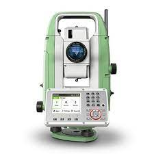

Електронний тахеометр

Тахеометр — електронно-оптичний інструмент, що використовується у сучасній геодезії,
призначений для вимірювання горизонтальних і вертикальних кутів, віддалей та перевищень,
тобто для виконання планово-висотної (тахеометричної) зйомки місцевості полярним способом.
Тахеометри використовуються для визначення планових координат і перевищень точок місцевості
при топографичній зйомці місцевості, при розбивочних роботах, виносі на місцевість планових
координат і висот проектних точок.
За типом далекоміра та способом реєстрації результатів вимірювань,
тахеометри поділяються на:
- оптико-механічні (з власною базою, номограмні,
подвійного зображення)
- електронно-оптичні
- електронні
- реєструвальні
В останніх вся інформація автоматично записується на носій. Вони широко
застосовуються для виконання зйомок місцевості. В загальній системі автоматичного
складання топографічних карт реєструвальні тахеометри є першою ланкою.
За типом далекоміра тахеометри поділяються на:
- звичайні (ті, для вимірювання відстаней з якими використовуються
спеціальні відбивачі: призмові або плівкові);
- безвідбивачеві (ті, що здатні виконувати вимірювання на
точки, розташовані на будь-якій твердій поверхні об'єктів зйомки).
Більшість сучасних тахеометрів є
безвідбивачевими. За типом механізма обертання електронні тахеометри поділяються на
механічні та
сервопривідні . Механічні тахеометри, при роботі з якими геодезист наводить зорову трубу на ціль
вручну, за допомогою навідних гвинтів, відрізняються більшою простотою в роботі та меншою вартістю.
В сервопривідних моделях обертання алідади та зорової труби тахеометра виконують допоміжні механізми
(сервоприводи), завдяки чому підвищується продуктивність праці,
бо оператор може керувати приладом дистанційно, знаходячись з боку вішки на значній відстані.
Тахеометр включає в себе:
- електронний теодоліт (кутомір);
- електронний далекомір;
- GPS-приймач;
- обчислювальний пристрій з пам'яттю, для вимірювання похилих
відстаней до заданих точок, горизонтальних і вертикальних кутів, та перетворення результатів із
сферичної до декартової системи координат.
У лазерних далекомірах відстані вимірюються:
- по різниці
фаз випущеного і відбитого променя (фазовий лазерний далекомір)
- за часом проходження променя лазера
до відбивача і назад (імпульсний лазерний далекомір).
Точність вимірювання залежить від технічних
можливостей моделі тахеометра, та від зовнішніх параметрів: температури, тиску, вологості тощо.
Діапазон вимірювання відстаней залежить від режиму роботи тахеометра: відбивний та безвідбивний.
Дальність вимірювань при безвідбивному режимі прямо залежить від відбивних властивостей поверхні,
на яку проводиться вимірювання. Для світлої гладкої поверхні (штукатурка, кахельна плитка тощо)
вона в кілька разів перевищує максимально можливу відстань, виміряну на темній поверхні. Максимальна
дальність лінійних вимірювань для режиму з відбивачем (призмою) — до п'яти кілометрів (при декількох
призмах — ще далі); для безвідбивного режиму — до одного кілометра. Моделі тахеометрів, які мають
безвідбивний режим, можуть вимірювати відстані практично до будь-якої поверхні, однак слід з обережністю
ставитися до результатів вимірювань, проведених крізь гілки, листя і подібні перешкоди, оскільки невідомо,
від чого саме відіб'ється промінь, і, відповідно, відстань до чого він виміряв. Існують моделі тахеометрів,
з далекоміром поєднаним з системою фокусування зорової труби. Переваги таких приладів в тому, що вимірювання
відстаней виробляється саме на той об'єкт, по якому в цей час виставлена зорова труба приладу.
Точність кутових вимірів сучасним тахеометром досягає половини кутової секунди (0°00'00,5"),
відстаней — до 0.5 (1) мм + 1 мм на км (наприклад, в тахеометрах серії NET05 від фірми SOKKIA
або Trimble S8-0.5R).
Точність лінійних вимірювань в безвідбивному режимі — до 1 мм + 1 мм на км.
- Trimble Navigation Ltd
- Leica Geosystems
- Sokkia Topcon South Precision Instrument Pvt. Ltd.
- Topcon
- South Precision Instrument Pvt. Ltd.
- Stonex
- Geomax
- Nivel System